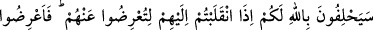
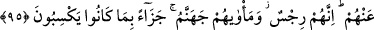

Münafığın özrü kabul edilmez
Çünkü o özür dudağındadır, kalbinde değil
Yalan çerçöpe benzer, gönül de ağıza
Çöp ağızda asla gizlenemez
“Yaptığınızı” gelecekte “Allah da görecek Rasûlü de.”, bakalım küfürden ve
münâfıklıktan tevbe mi edeceksiniz, yoksa bu halinize devam mı edeceksiniz?
Bu ifadeden sanki münâfıklardan tevbe etmelerinin istendiği ve tevbe için kendilerine
mühlet verildiği anlaşılmaktadır.
“Sonra” kıyâmet gününde “görülmeyeni” kullardan gizli kalanı “ve görüleni”
kulların bildiğini “bilenin huzuruna döndürüleceksiniz. O,” O’na döndürülüp huzuruna
vardığınızda “size yaptıklarınızı” dünyada sürekli olarak işlediğiniz ve işleyeceğiniz
kötü amellerinizi “haber verecek.” Allah’ın bu amelleri haber vermesinden maksad,
işledikleri kötülüklere karşı onları cezalandırmasıdır. “Sizi cezalandıracaktır” ifadesi
yerine “haber verecektir” ifadesinin tercih edilmesi şunu bildirmek içindir: O
münâfıklar dünyada iken amellerinin hakikatını bilmiyorlardı. Onlar bunları o gün
gerçek sûretleri ile gördüklerinde bilecek ve anlayacaklardır.
95. Siz yanlarına geldiğiniz zaman kendilerinden vazgeçesiniz diye Allah’a yemin
edecekler. Onlardan vazgeçin, çünkü onlar murdardır. Kazandıkları şeylerin cezâsı
olarak varacakları yer de cehennemdir.
“Siz yanlarına geldiğiniz zaman” Savaştan dönüp o münâfıkların yanına vardığınız
zaman “kendilerinden vazgeçesiniz diye” işledikleri günahları görmezlikten gelesiniz,
kendilerini kınamayı ve azarlamayı terk edesiniz diye yalan mazeretlerini “Vallahi
çıkmaya gücümüz olmadı, şayet gücümüz yetseydi elbette geri kalmazdık.” diyerek
te’kid etmek için “Allah’a yemin edecekler.” Âyette bahsedilen münâfıklar Ced b.
Kays, Mu‘teb b. Kuşeyr ve arkadaşlarıdır.
“Onlardan vazgeçin,” fakat bu onların da istediği gibi onlardan râzı olma şeklinde
bir vazgeçme değil, onlardan uzaklaşma, onları kınama ve tahkir şeklinde olsun.
“Çünkü onlar murdardır.” pis koku gibi uzak durulması gereken murdar kimselerdir.
Onlarda manevî pislik vardır. et-Tibyân’da bu ifâdenin tefsîrinde şöyle denilmiştir:
Yani kendileri necistir, amelleri de çirkindir. Onlar kınama ve azarlama yoluyla
temizlenmezler.
“Kazandıkları şeylerin cezâsı olarak varacakları yer de cehennemdir.” Bu ifade
onlardan niçin vazgeçilmesi gerektiğini açıklamaktadır. Çünkü onların cehennem